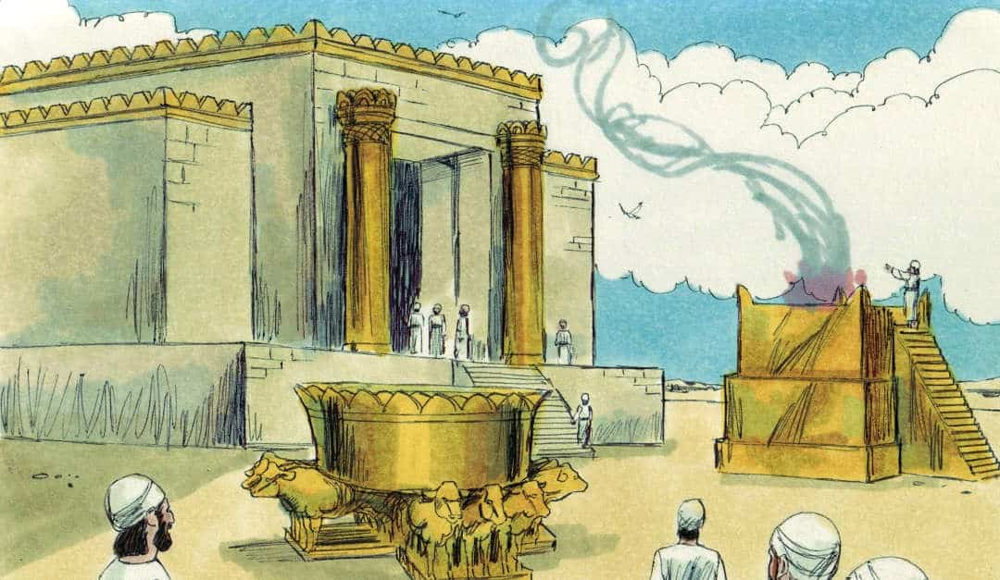
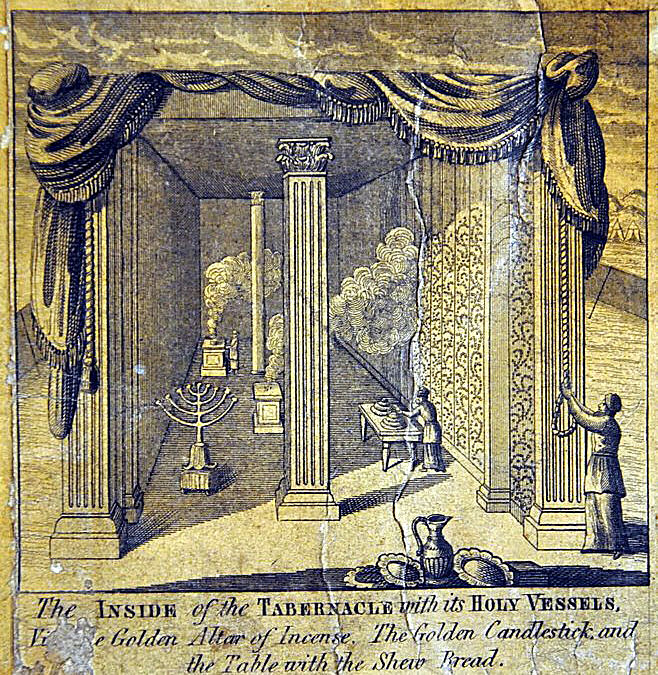

O Templo de Salomão
Prefácio
O Templo de Salomão, também conhecido como o Primeiro Templo, foi um dos mais significativos edifícios da história religiosa judaica, construído em Jerusalém durante o reinado do Rei Salomão, aproximadamente no século 10 a.C. Além de ser um centro de culto e sacrifício, o templo possui uma riqueza de simbolismo esotérico e espiritual.
Arquitetura do Templo de Salomão
Dimensões e Estrutura
• Dimensões Gerais: Segundo a Bíblia (1 Reis 6-7), o Templo de Salomão tinha aproximadamente 60 côvados de comprimento, 20 côvados de largura e 30 côvados de altura (cerca de 27 metros de comprimento, 9 metros de largura e 13,5 metros de altura).
Divisões Principais
• Ulam (Pórtico): A entrada principal do templo, uma área de transição que separa o exterior profano do interior sagrado.
• Hekhal (Lugar Santo): A área principal de adoração, onde estavam localizados o candelabro de ouro (menorá), a mesa dos pães da proposição e o altar do incenso.
• Debir (Santo dos Santos): O espaço mais sagrado, onde estava a Arca da Aliança. Este espaço era acessado apenas pelo Sumo Sacerdote uma vez por ano, no Yom Kipur.
Materiais de Construção
• Pedra e Madeira: As paredes do templo eram feitas de pedra, e o interior era revestido com madeira de cedro, esculpida com figuras de querubins, palmeiras e flores abertas.
• Ouro: O interior do templo era ricamente decorado com ouro, incluindo o revestimento das paredes e dos móveis sagrados.
Elementos Adjacentes
• Colunas de Jachin e Boaz: Duas grandes colunas de bronze situadas na entrada do templo, com significados simbólicos que se relacionam à estabilidade e força.
• Bronze Mar: Um grande tanque de bronze, sustentado por doze bois de bronze, utilizado pelos sacerdotes para abluções rituais.
• Altares: Incluía um grande altar de bronze no pátio para sacrifícios de animais.
Simbolismo do Templo de Salomão
Gravura da Maquete - Templo do Rei Salomão por volta de (1693-1698), Construído por Gerhard Schott (1641-1702)Simbolismo Arquitetônico
• Microcosmo do Universo: O templo era visto como um microcosmo do universo, refletindo a ordem cósmica e divina. Cada detalhe arquitetônico tinha um significado simbólico que refletia a criação e a estrutura do mundo.
• Três Áreas: As três áreas principais do templo (Pórtico, Lugar Santo e Santo dos Santos) representam diferentes níveis de espiritualidade e acesso à divindade:
• Pórtico: Representa o mundo físico e o início da jornada espiritual.
• Lugar Santo: Representa a consciência espiritual e a adoração ativa.
• Santo dos Santos: Representa a presença direta de Deus e a iluminação espiritual.
Modelo de Schott, por volta de 1723-1729. A imagem retrata o Sanctum Sanctorum com os Querubins guardando a Arca da Aliança.Simbolismo Esotérico
• Colunas de Jachin e Boaz: Representam dualidade e equilíbrio, princípios masculinos e femininos, força e estabilidade. Na tradição maçônica, essas colunas têm um significado profundo em relação à busca do equilíbrio e harmonia espiritual.
• Bronze Mar: Representa a purificação espiritual e a ablução dos pecados. O número doze (bois) pode simbolizar as doze tribos de Israel ou os doze signos do zodíaco.
• Arca da Aliança: Situada no Santo dos Santos, simboliza a presença de Deus e a aliança entre Deus e o povo de Israel. Continha as tábuas dos Dez Mandamentos, simbolizando a lei divina.
Modelo de Schott, por volta de 1723-1729. A imagem retrata o tabernáculo dos hebreus.Significados Espirituais
• Lugar de Encontro Divino: O templo era visto como o ponto de encontro entre o céu e a terra, onde a presença de Deus se manifestava diretamente.
Modelo de Schott, por volta de 1723-1729. A imagem retrata Salomão sendo cheio de conhecimento divino.• Sacrifício e Expiação: Os rituais de sacrifício realizados no templo simbolizavam a expiação dos pecados e a renovação da aliança com Deus.
• Espiral Ascendente: A ascensão do pórtico ao Santo dos Santos pode ser vista como uma jornada espiritual de purificação, iluminação e união com o divino.
Modelo de Schott, por volta de 1723-1729. A imagem retrata o Concílio do Sinédrio.Influência e Legado
• Templos Posteriores: O Segundo Templo, reconstruído após o exílio babilônico, e outros templos ao longo da história judaica e cristã foram influenciados pelo design e simbolismo do Primeiro Templo.
• Tradição Maçônica: A Maçonaria adota muitos dos símbolos e alegorias do Templo de Salomão, utilizando-os em seus rituais e filosofia espiritual.
• Esoterismo e Alquimia: O simbolismo do Templo de Salomão ressoa em várias tradições esotéricas, alquímicas e ocultas, representando a busca do conhecimento e da iluminação espiritual.
Modelo de Schott, por volta de 1723-1729. A imagem retrata o interior do Tabernáculo com seus vasos sagrados. Reflexão
O Templo de Salomão é mais do que um edifício; é um símbolo profundo e multifacetado de espiritualidade, poder divino e sabedoria. Sua arquitetura detalhada e rica em simbolismo continua a inspirar e fascinar estudiosos, esoteristas e religiosos até os dias atuais. A lenda do templo e seus elementos sagrados oferecem um portal para explorar as complexas interseções entre a história, a religião e a busca eterna do ser humano pelo divino.